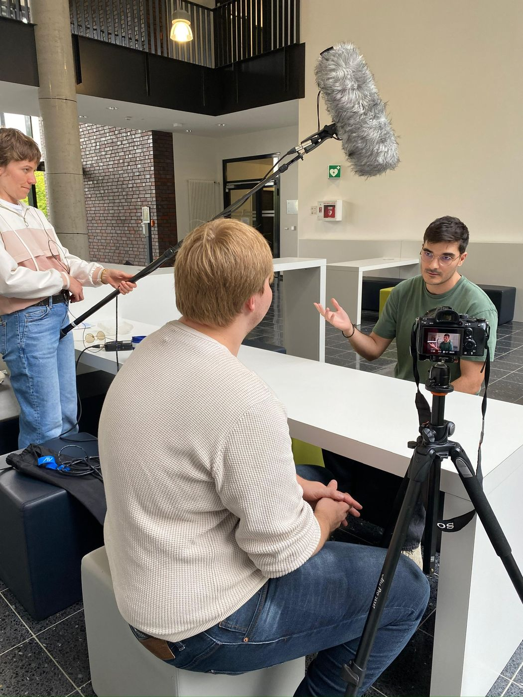
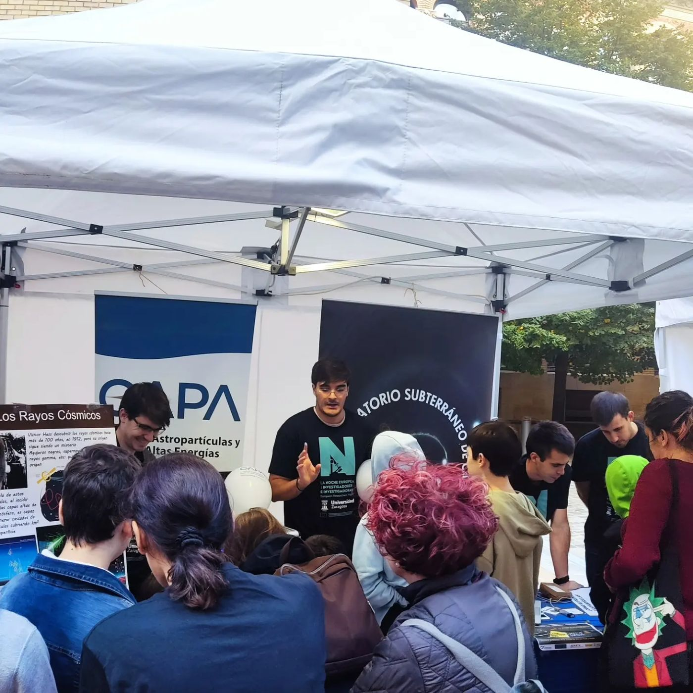
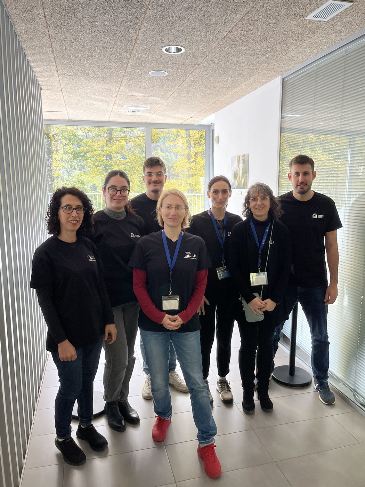
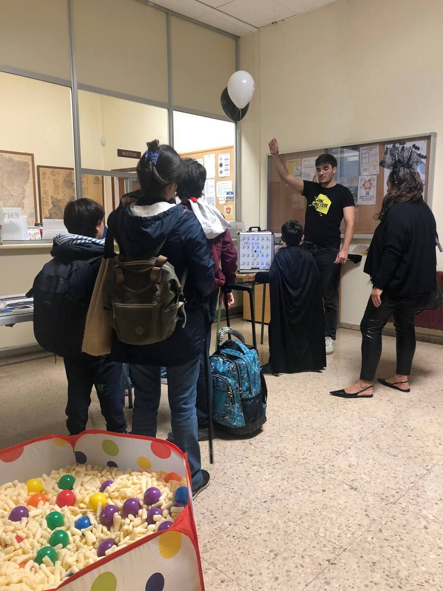
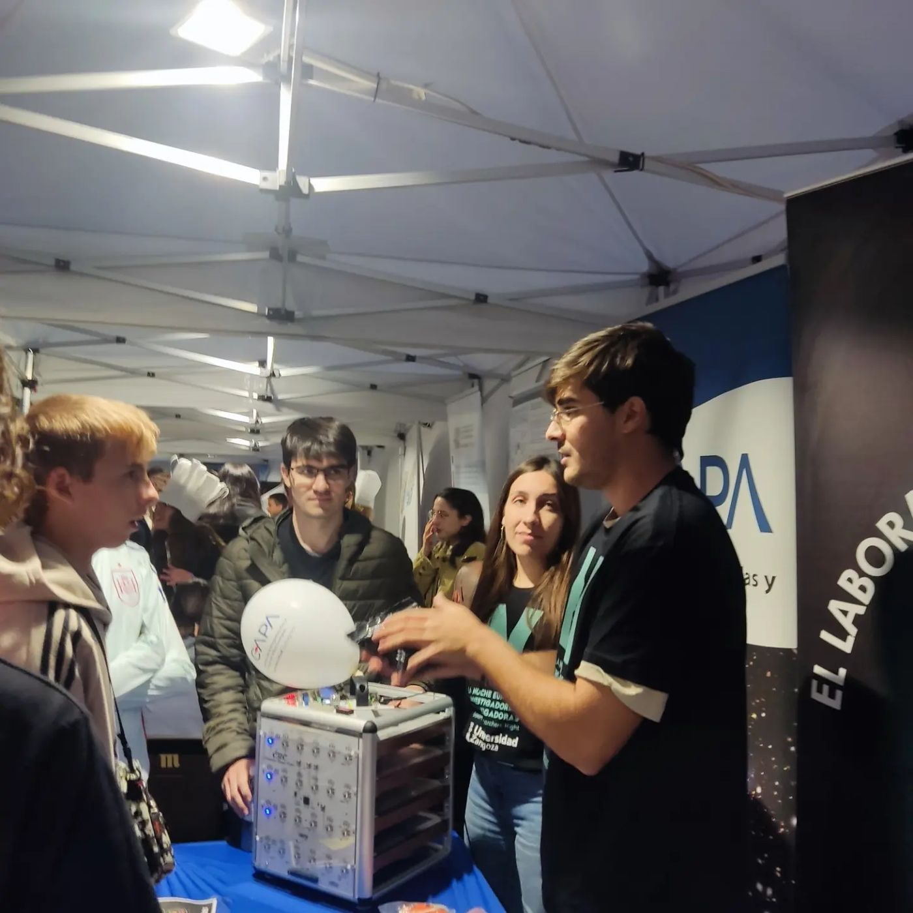

Short videos
Scripted, filmed and edited end to end, the format I produced as CAPA’s social media manager.
ES · EN

Dark matter, explained at stands, in classrooms and on camera.
I was the social media manager at CAPA, the astroparticle centre at the University of Zaragoza, where I led the content team: scripts, filming and editing, end to end.
If you run a school visit, a science festival or a podcast and want someone to explain axions without equations, get in touch.




Scripted, filmed and edited end to end, the format I produced as CAPA’s social media manager.
ES · EN
What dark matter is, why we think it’s there, and how you hunt for a particle nobody has seen, with a real detector on the table.
ES · EN
Science festivals, researchers’ nights and lab open days, with hands-on demos for whoever walks up.
ES · EN
Axions, X-ray telescopes, and what it’s like to do a PhD split between Dortmund and Zaragoza.
ES · EN
NuSTAR · Oct 2025
NuSTAR mission news on axion searches in the Sun, Betelgeuse and M82, with comments from me as first author.
Phys.org · Jun 2025
On galaxy-wide X-ray searches for axions, including our M82 paper.
Physics (APS) · May 2025
Michael Schirber on the M82 and M87 axion searches in Physical Review Letters.